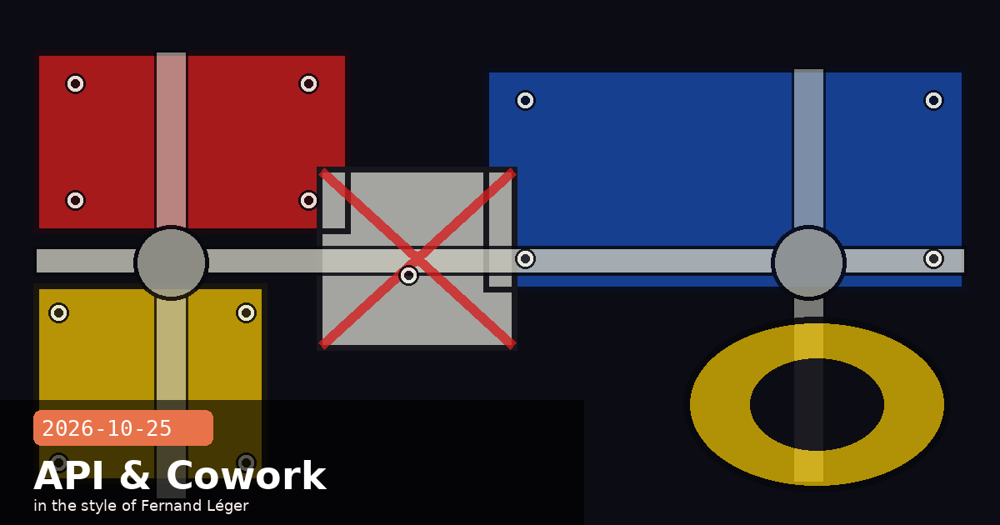

Pre-IPO Departures, API Breaking Change, and Enterprise Cowork GA

🧭 Two Claude Code Engineers Leave Anthropic Weeks Before the IPO
Two prominent members of the Claude Code team announced their departures from Anthropic within hours of each other on October 23–24, just as the company's two-week IPO roadshow enters its second day. Thariq Shihipar, who spent more than a year building core Claude Code features, posted on X at 04:04 UTC on October 24 that he had left, writing that he "watched it scale larger than he ever imagined" and needed "a bit of a break before diving into something new." Anthony Morris, who created Claude Code on Desktop, followed hours later, stating October 23 was his last day. Neither named a next role or gave a reason for leaving.
What they built
Thariq Shihipar worked across the Claude Code CLI — his fingerprints are on session management, hook infrastructure, and several of the developer-experience improvements shipped in 2026.
Anthony Morris created Claude Code on Desktop, the native macOS and Windows application wrapper that brought Claude Code out of the terminal and into a windowed UI, broadening its reach beyond command-line-comfortable developers.
Context: two people, not an exodus
Social media reaction ranged from concern to hyperbole, with some posts framing the departures as a sign of internal trouble ahead of the IPO. Community members quickly pushed back: as one X post put it, "Everyone's leaving Anthropic is two people. Thariq and Anthony Morris, both Claude Code, both gone in a day. Real loss. Not an exodus. Calm down." Pre-IPO departures are common — lockup expiry calculus, personal timing, and burnout after rapid scaling all play a role. Neither engineer's departure changes the core Claude Code roadmap, which is staffed by a much larger team. The more salient fact is that both engineers were meaningfully productive contributors whose tacit knowledge now lives outside Anthropic.
What this means for Claude Code users
No immediate change to the product or roadmap is expected. Anthropic has not issued a statement, which is standard for individual departures. The Claude Code Desktop application continues to receive updates; v2.1.310 shipped two days ago. If you are building internal tooling that depends on specific Claude Code behaviours, the skills to watch are session continuity and the hook infrastructure — the areas Thariq worked closest to — for any unexpected regressions in upcoming releases.
Claude CodeThariq ShihiparAnthony MorrisIPOstaffingdepartures
🧭 Claude API 2026-10-21 — temperature, top_p, and top_k Removed: What Breaks Today
Anthropic has released the first new named API version since 2023-06-01 — and it ships breaking changes that will silently sever integrations that pass sampling parameters. If your code sends temperature, top_p, or top_k on any Messages API call — including at their default values — those calls will return a 400 Bad Request error when targeting API version 2026-10-21. This applies to message batches and token-counting endpoints as well, not just single-turn calls.
Why removing defaults still breaks you
The subtlest part of this change is that it catches explicit defaults. Many production codebases document intent by writing temperature=1.0 or top_p=1.0 — the value is the same as the model default, but the code expresses it explicitly for readability. Under 2026-10-21, even these calls return 400. The reason is architectural: Anthropic is moving sampling control entirely to the model layer, eliminating the parameter surface so that future model families can manage their own token-selection behaviour without the API contract entangling them.
Authentication header change
The new SDK major versions (Python SDK v3, TypeScript SDK v3) default to 2026-10-21 and send your API key as Authorization: Bearer sk-ant-... instead of the legacy X-Api-Key header. Any proxy, API gateway, or logging middleware that reads or forwards X-Api-Key will receive requests with no visible authentication credential — this is a silent failure mode worth auditing before upgrading.
Migration checklist
Search your codebase for temperature=, top_p=, top_k= and delete all occurrences — both non-default values (no longer accepted) and explicit defaults (also rejected).
Search for X-Api-Key in any proxy, gateway, or network-layer logging config and replace with Authorization header inspection.
Upgrade Python and TypeScript SDKs together — mixing old SDK + new API version, or new SDK + old API version, produces the clearest error messages for debugging.
Requests that remain pinned to anthropic-version: 2023-06-01continue to work — the legacy version is supported and not yet deprecated. Use this as a safety net while migrating.
Quick grep to find affected call sites
# In Python projects
grep -r "temperature\|top_p\|top_k\|X-Api-Key" --include="*.py" .
# In TypeScript/JavaScript projects
grep -r "temperature\|top_p\|top_k\|X-Api-Key" --include="*.ts" --include="*.js" .
Pipe the output through | grep -v "\.test\." | grep -v "spec" to skip test files and focus on production call sites first.
🧭 Claude Enterprise — Chat and Cowork Unified Into One Experience, Now GA
Anthropic has merged Claude's chat interface and its agentic "Cowork" feature into a single unified experience for Claude Enterprise customers, effective October 23. Previously, Cowork ran as a distinct mode with its own session context; now a single Claude handles everything from a quick question to a multi-day agentic project within the same conversation on web, desktop, and mobile. The agentic work runs in an Anthropic-managed cloud environment — meaning agents can keep running even when a user's browser is closed, without requiring the user to keep a local process alive.
What changed for Enterprise admins
Default state today: The unified experience is off by default for existing organisations. Admins must explicitly enable it for their users.
Auto-enable date: On November 16, 2026, Anthropic will switch it on by default for all Enterprise organisations that have not made an explicit choice. Review your settings before then if you want to stay on the previous separation.
Exempt configurations: Organisations on zero-data-retention (ZDR), HIPAA-ready configurations, or customer-managed encryption keys (CMEK) are not auto-migrated — they remain on their current setup until they opt in.
Efficient mode: A new admin control that limits agentic work to a budget-conscious execution profile, capping the number of tool calls and sub-agent spawns per session. Useful for teams where cost predictability matters more than maximum capability.
Role-based access: Admins can restrict Cowork usage to specific roles or departments — important in regulated industries where not every user should be triggering long-running autonomous workflows.
What this means in practice
The key user-facing change is context continuity. Previously, switching from a chat question to an agentic task required opening a different interface or mode, breaking conversational flow and requiring the user to re-establish context. Now, a developer can ask "what's the status of our test suite?" and then say "fix the three flaky tests in the auth module" and Claude maintains the same context thread — reading the repo, running tests, and pushing commits — without the user needing to re-explain the project structure.
Action before November 16
Enterprise workspace owners should log in to the admin dashboard, navigate to Settings → Cowork, and confirm whether auto-enablement on November 16 is appropriate for their organisation. Specifically: (1) verify your billing team is aware that agentic usage can generate more tokens per session than chat, (2) check which roles should have access and configure role restrictions now, and (3) if your org is on ZDR or HIPAA mode, confirm with Anthropic's enterprise team what the upgrade path looks like for your configuration.